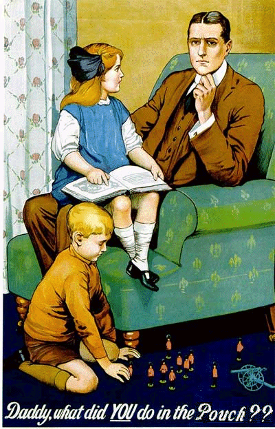

"Daddy, what did you do in the Pouch," a Little Girl innocently asks her Adored Father, never suspecting the Consternation and Dismay that this Simple Question arouses in the fellow's Troubled Conscience.
For we can see quite obviously from the Father’s Perturbed and Guilty Expression, that he did Nothing in the Pouch. He did not write Clever Articles, nor Convert the Works of Others into HTML, nor even write a single Letter to the Pouch Deposits. Now he must admit this Hated Fact to the young Apple of His Eye. For this Lack on his Part is a Cross of Shame which his Entire Family will have to bear for DECADES.
Do not live in Fear of this Question! Rather, Make sure you are always able to hold your Head up High. Do What Must Be Done. Write those Clever Articles. Instruct yourself in the Fine Intricacies of HTML, and help transform Important Documents from Word into a Web Page. Conduct yourself in such a Fashion that, should the Pouch and All Its Sections last a Thousand Years, Men will still say, "This was his (or her) Finest Contribution".
This is our last issue before WDC 2007 takes place. However, there is still time to volunteer — there is always help needed for hosting a WDC!
If you're willing to pitch in, please contact:
Mike Hall: spiritof67@shaw.ca
Riaz Virani: mr_smooth77@yahoo.com
Nathan Barnes: nbarnes99@hotmail.com
The Pouch needs as many good articles as it can get. If you enjoy reading the Pouch, why not write something for us? We are open to a wide array of topics; anything related to Diplomacy (i.e. historical/social context, reviews of literature dealing with that time period, etc.) are just as welcome as tactical studies and strategic approaches. Also, stories of interesting and unique games at Cons, at home, or over the 'net are also desired!
The deadline for submissions for the next (F2007M) issue is August 1st, 2007. So don't hesitate, and don't be shy. Begin writing something today! Soon you'll experience the satisfaction of seeing your own article in the DP Zine, and having your own work added to the accumulated canon of the hobby.
To submit your articles, send them to editor@diplom.org, or click the link at the bottom of the page.
 |
The Editor (editor@diplom.org) |
If you wish to e-mail feedback on this article to the author, and clicking on the envelope above does not work for you, feel free to use the "Dear DP..." mail interface.